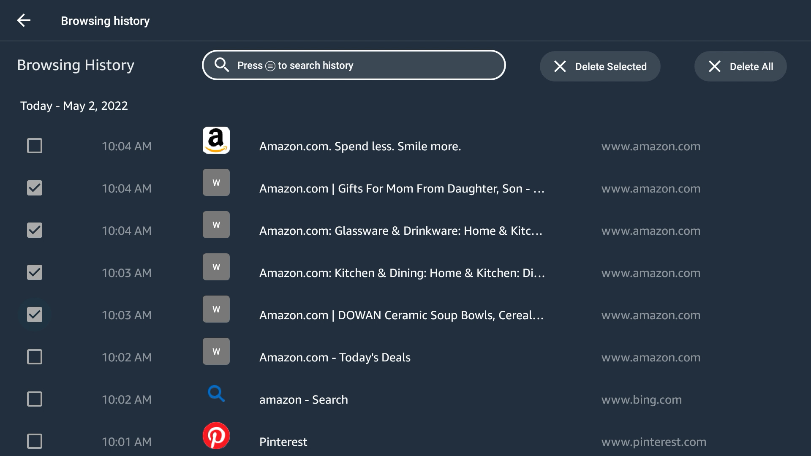
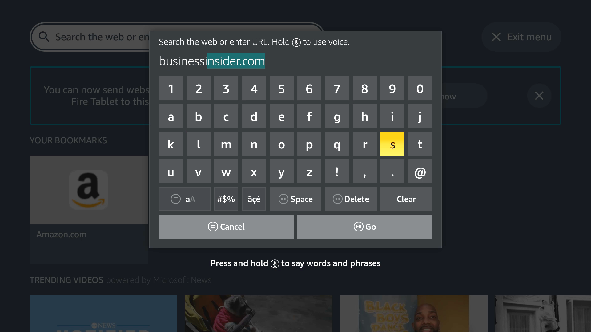
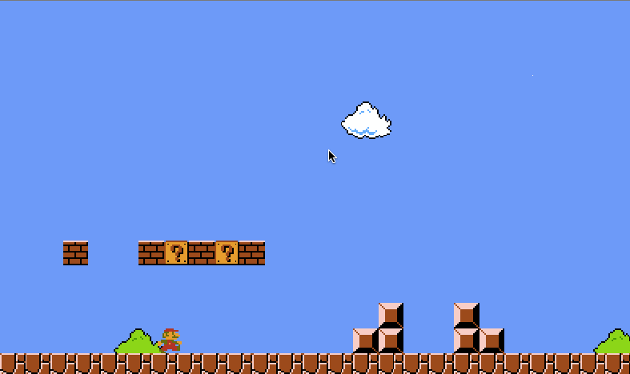
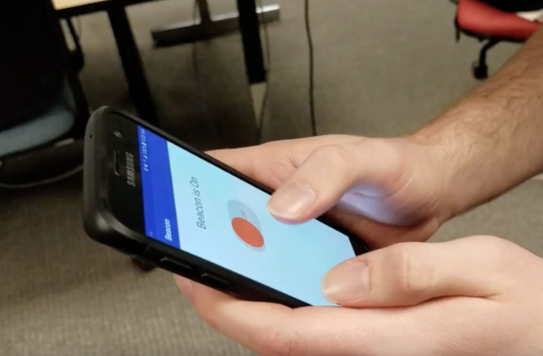
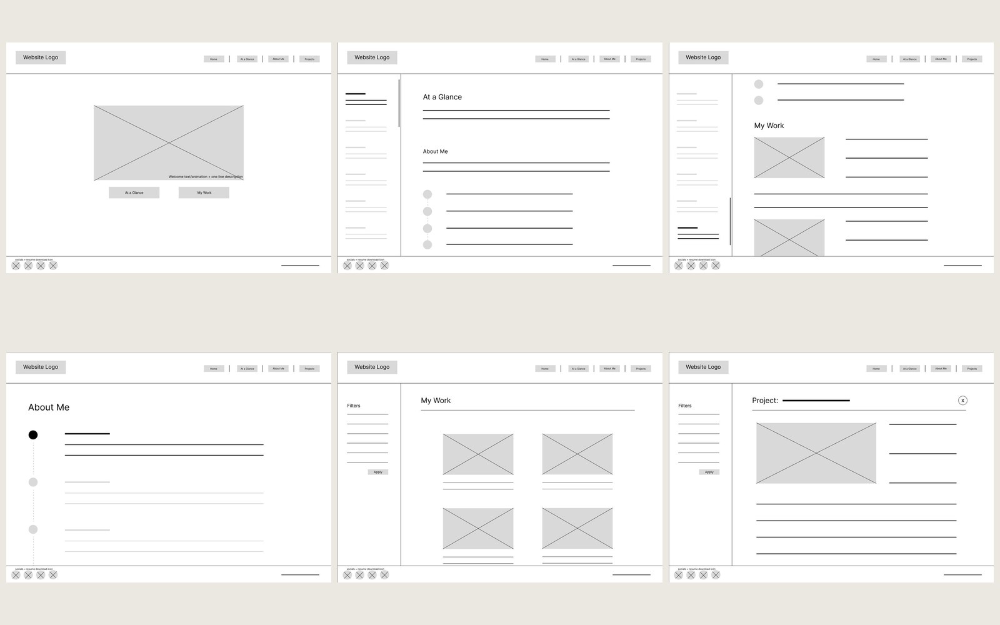

Designed and shipped Silk's first browsing history feature for Fire TV, validated with A/B testing across all customers.

Rebuilt autocomplete for Silk on Fire TV from a static top-sites list to a personalized system drawing from each customer's browsing history and bookmarks.

Trained a reinforcement learning agent to clear World 1-1 using Q-learning, a custom reward function, and 7,167 training episodes.

An app that silently transmits GPS coordinates to 911 dispatchers the moment a call is placed, built in 24 hours and stripped down to a single button.
Built for English-speaking teachers who couldn't read the Korean cafeteria menu. Skipped translation and pulled Google Image results for each dish instead.

A UX case study where the portfolio itself is the artifact. Empathy mapping and wireframing led to a full rebuild, then daily use surfaced every fix worth making.
Graduate design research on how newly arriving international master's students find housing in Seattle where they can feel at home.
Graduate qualitative research on how people in Seattle make decisions about using public transit.